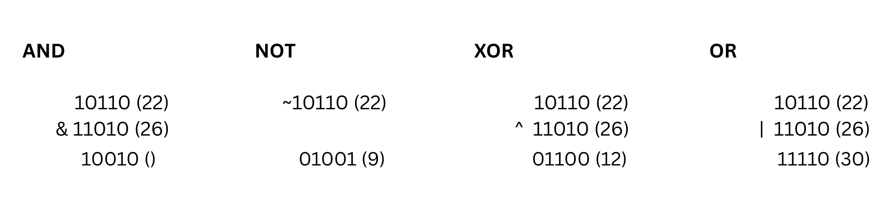

All data in computer programs is internally stored as bits, i.e., as numbers 0 and 1. Bitmasking/Bitmanipulation involves directly working with individual bits (0s and 1s) using operations like AND, OR, XOR, and NOT :
The and operation x & y produces a number that has one bits in positions where both x and y have one bits. For example, 22 & 26 = 18, because
The or operation x | y produces a number that has one bits in positions where at least one of x and y have one bits.
The xor operation x ^ y produces a number that has one bits in positions where exactly one of x and y have one bits.
The not operation ~x produces a number where all the bits of x have been inverted. NOT in bitmasking is a tricky operator as its representation depends on size of data structure
x = 29 => 00000000000000000000000000011101
~x = −30 => 11111111111111111111111111100010
x << k: Shifts the bits of x to the left by k positions (equivalent to multiplying by 2k)x >> k: Shifts the bits of x to the right by k positions (equivalent to dividing by 2k, discarding remainder)